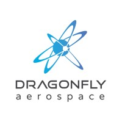

Dragonfly Aerospace
Dragonfly Aerospace is an Australian space technology company dedicated to developing innovative solutions for commercial spaceflight and satellite operations. The company specializes in advanced aerospace engineering and develops cutting-edge technologies for the global space industry.
Overview
Dragonfly Aerospace focuses on designing and manufacturing high-performance spacecraft systems, propulsion technologies, and space infrastructure. The company works closely with government agencies, commercial operators, and international partners to advance Australia's position in the space sector.
Core Activities
- Spacecraft Development: Design and manufacturing of advanced satellites and space vehicles
- Propulsion Systems: Development of efficient and reliable propulsion technologies for space applications
- Space Infrastructure: Ground stations and support systems for satellite operations and communications
Mission Portfolio
Dragonfly Aerospace has undertaken various projects supporting commercial satellite deployment, Earth observation missions, and deep-space exploration. The company provides critical technology and services for both national and international space programs.
Future Direction
The company aims to expand Australia's independent space capabilities through continued innovation in spacecraft design, reusable launch systems, and autonomous space operations. Dragonfly Aerospace is committed to strengthening Australia's role in the global commercial space economy.